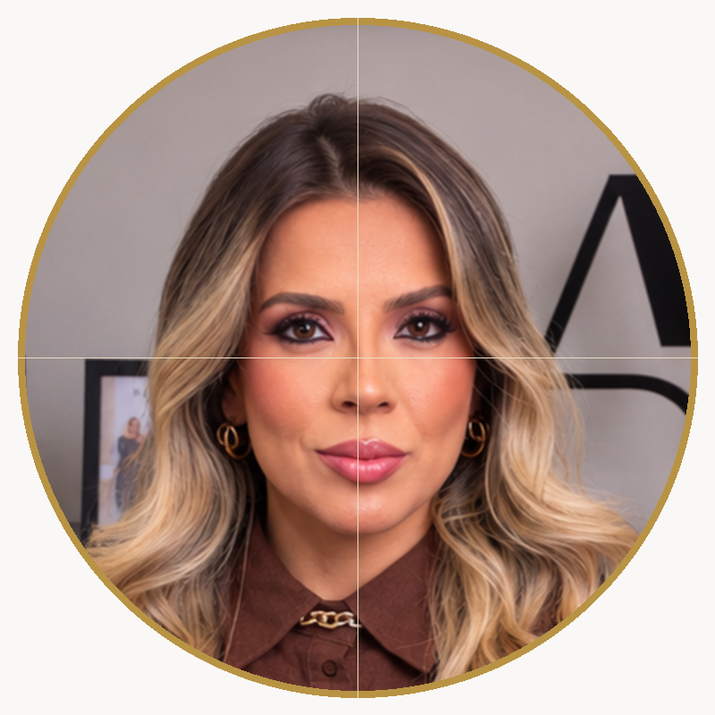
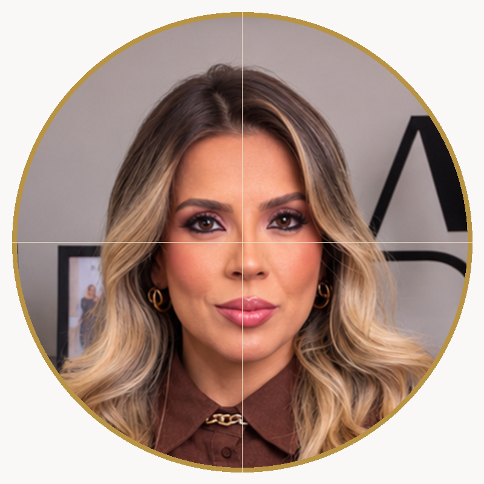

Correção de inclinação angular e centralização geométrica milimétrica dos eixos faciais

Cabeça ligeiramente inclinada para o lado, olhar desalinhado e assimetria perceptível.
Olhos 100% nivelados na horizontal, nariz e queixo no eixo central exato, cabelo proporcionalmente distribuído.

Linhas douradas comprovam que a linha dos olhos e o centro do rosto passam precisamente pelo centro do círculo.